Estes relatórios técnico-científicos descrevem as ações e os desdobramentos do projeto de intervenção Teares do Xixá: Fiandeiras em Ação, desenvolvido pelos cursistas Abadia Maria de Oliveira, Luana Ribeiro Brás e Michel Duarte Ferraz. A intervenção, voltada para a tecelagem manual das fiandeiras que integram o Arranjo Produtivo Local da Tecelagem Manual – APL Teares do Xixá em municípios goianos, teve por finalidade a reflexão sobre o saber fazer das fiandeiras, com o intuito de perceber o ofício realizado por elas como patrimônio material e imaterial. O trabalho conjunto dos alunos possibilitou a realização de duas ações integradas, sendo a primeira um encontro de fiandeiras, na Cidade de Goiás, em abril de 2015, e a segunda, em Recife (PE), em junho de 2015, por meio de uma exposição fotográfica da participação das fiandeiras, mostrando as técnicas de produção. O projeto de intervenção Teares do Xixá: Fiandeiras em Ação teve como objetivo principal a sensibilização para a valorização da tecelagem manual como parte integrante do patrimônio cultural goiano e brasileiro, portanto, merecedora de preservação e difusão.
Palavras-chave: Fiandeiras. Teares do Xixá. Patrimônio Cultural. Intervenção.
Alunos:
Abadia Maria de Oliveira
Luana Ribeiro Brás
Michel Duarte Ferraz
Teares do Xixá: Fiandeiras em Ação
Aluna: Abadia Maria de Oliveira
Polo: Cidade de Goiás
Orientadora Acadêmica: Lucinete Aparecida de Morais
Coordenadora de orientação: Vânia Dolores Estevam de Oliveira
Anexos
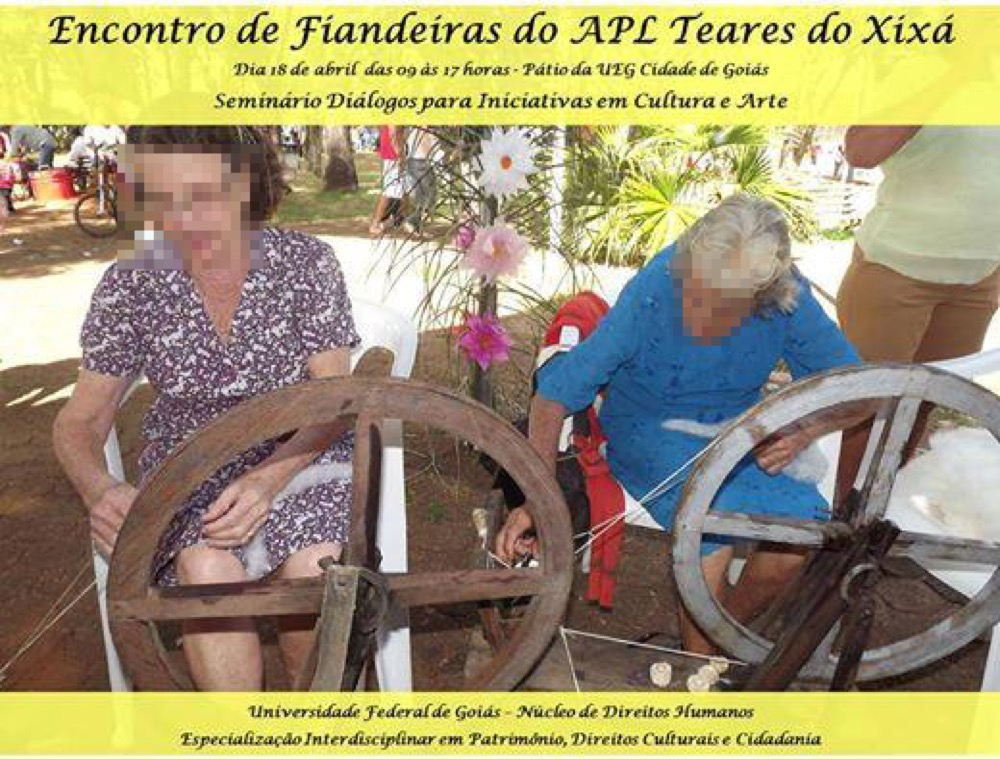
Imagem 1– Convite da Intervenção realizada no Seminário Diálogos para Iniciativa em Cultura e Arte. Fonte: Digitalização de material produzido pela autora do relatório
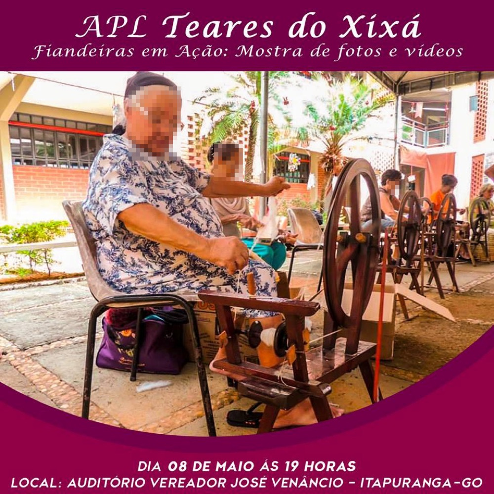
Imagem 2 - Mostra de Fotos de Vídeos no Auditório José Venâncio. Fonte: Digitalização de material produzido pela autora do relatório
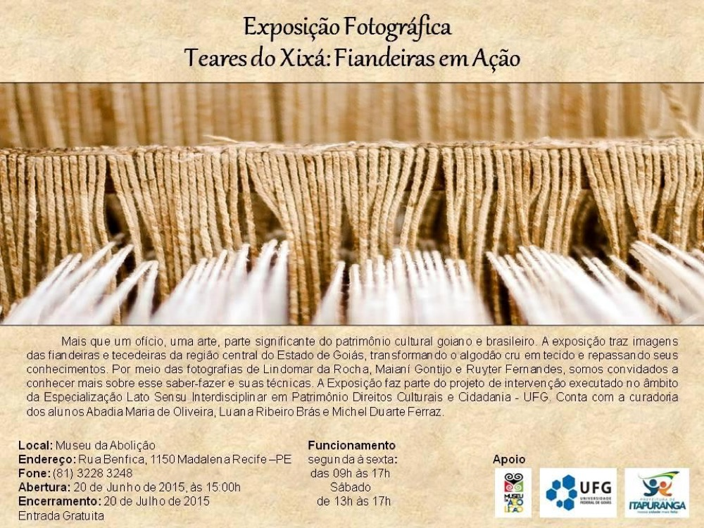
Imagem 3: Convite da Exposição Fotográfica Itinerante em Recife. Fonte: Digitalização de material produzido pela autora do relatório
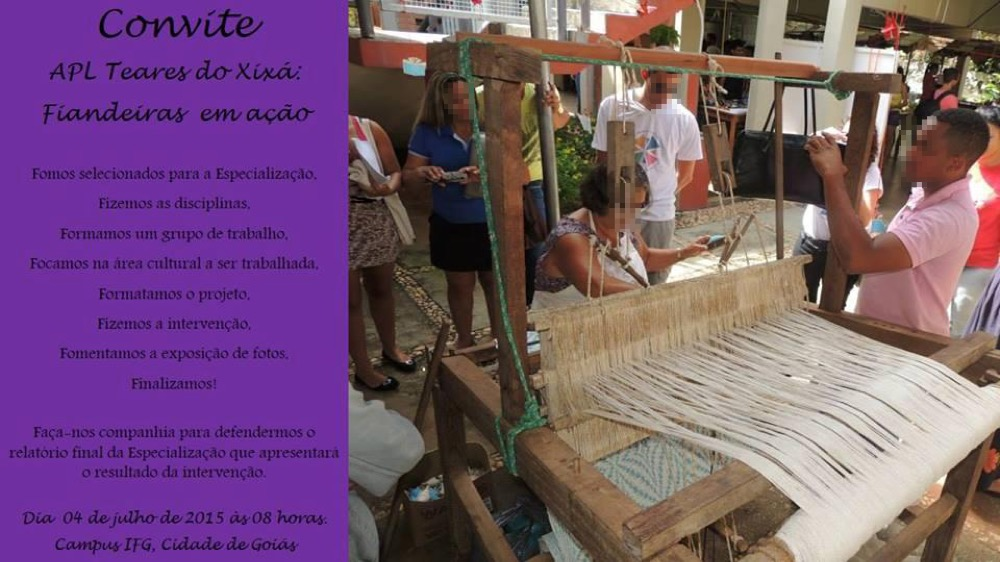
Imagem 4 - Convite da Apresentação/Defesa do Projeto de Intervenção. Fonte: Digitalização de material produzido pela autora do relatório
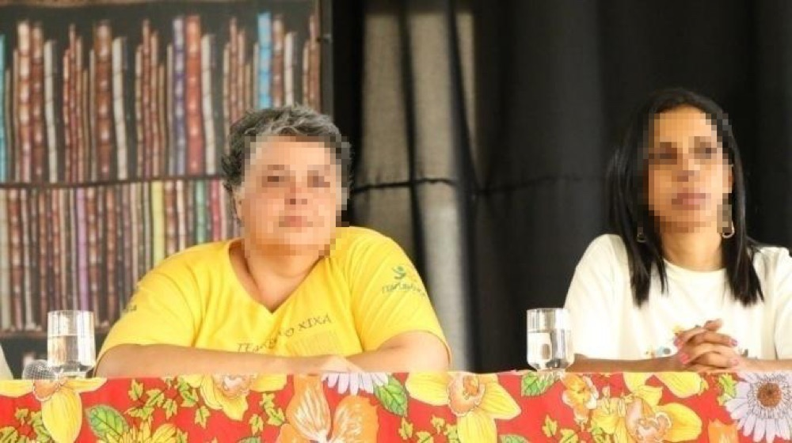
Imagem 5 - Fala da aluna Abadia Maria de Oliveira Sobre as Fiandeiras. Fonte: Ruyter Fernandes
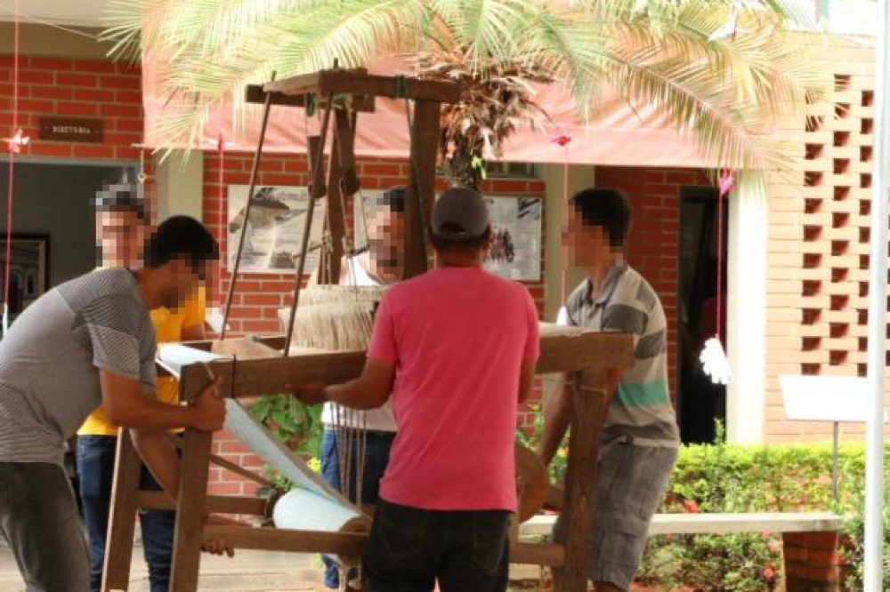
Imagem 6 - Chegada do Tear e Demais Petrechos de Trabalho no Seminário Diálogos para Iniciativa em Cultura e Arte. Fonte: Ruyter Fernandes
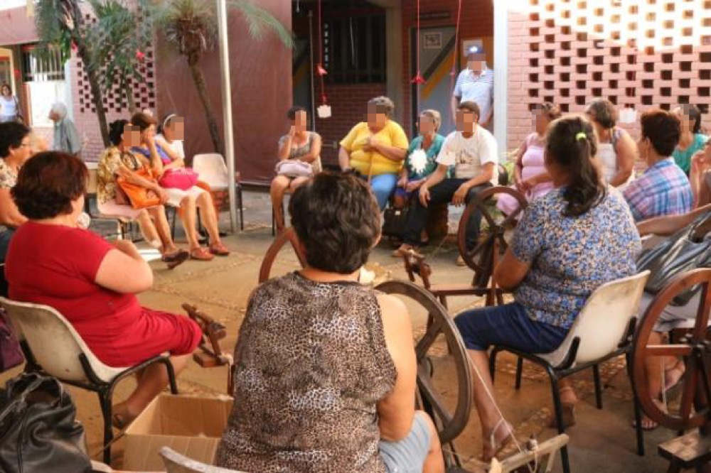
Imagem 7 - Momento de Acolhimento e Conversa Sobre o Projeto de Intervenção. Fonte: Ruyter Fernandes
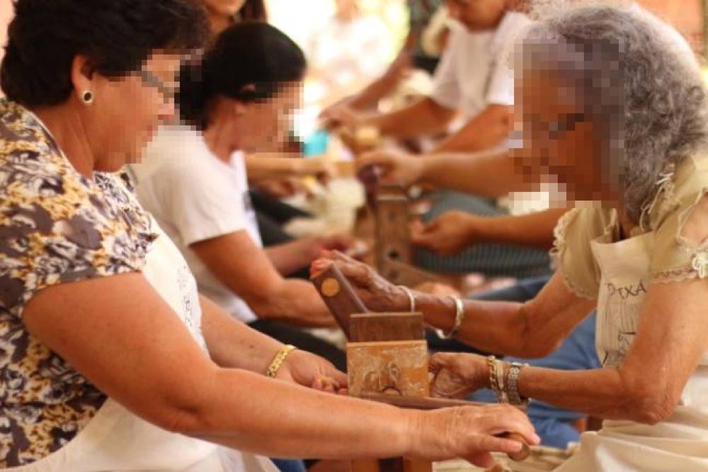
Imagem 8 - Trabalho Coletivo em Torno da Descaroçadeira de Algodão. Fonte: Ruyter Fernandes
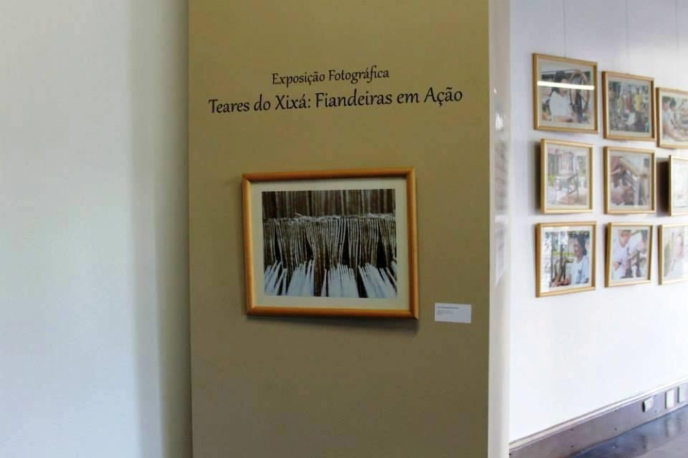
Imagem 9 - Painel de Abertura da Exposição. Fonte: Rosélia Adriana Barbosa da Rocha
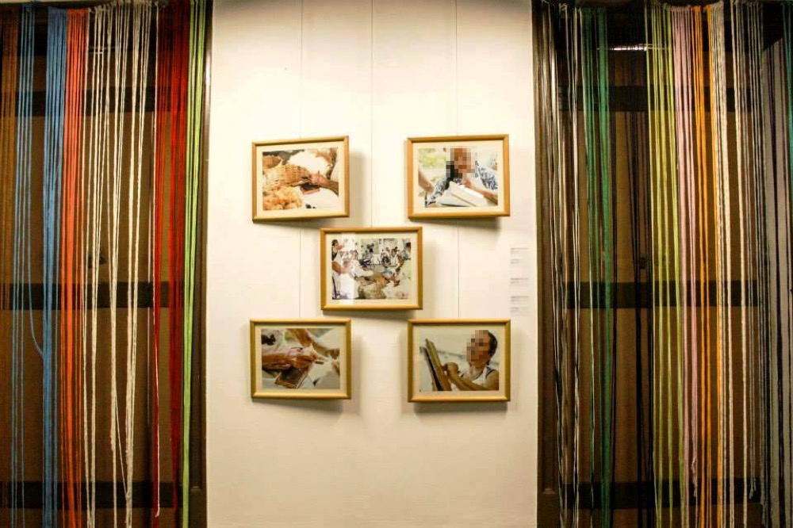
Imagem 10- Fotos e Portadas Decoradas com Cordões de Algodão Tingidos. Fonte: Rosélia Adriana Barbosa da Rocha
INTRODUÇÃO
A intervenção, objeto deste relatório, foi intitulada Teares do Xixá: Fiandeiras em Ação, tendo em vista que apresenta o resultado dos trabalhos realizados por fiandeiras de quatro municípios goianos. Na intervenção participaram, em sua maioria, as fiandeiras de Itapuranga, cidade que faz parte da Microrregião do Centro Goiano, composta por 16 municípios. Nesta região está situado o grupo de fiandeiras - Teares do Xixá, regularizado no Ministério da Indústria e Comércio Exterior e no Ministério da Cultura como Arranjo Produtivo Local (APL) da Tecelagem Manual, e que apresenta seus ofícios em eventos públicos locais e em outras regiões do Estado de Goiás. O trabalho do APL ainda se encontra em início de atuação, com o mapeamento das fiandeiras dos municípios que o integram: Goiás, Heitoraí, Itaberaí e Itapuranga.
O APL de Tecelagem Manual denominado Teares do Xixá foi criado em meados de 2013, tendo em vista a necessidade de valorizar, resgatar, preservar e repassar as atividades da tecelagem manual tradicional. Busca também dar visibilidade aos saberes e fazeres das pessoas que ainda conhecem e sabem fazer as etapas da tecelagem manual tradicional, em teares de pedal, pente e liço, denominados teares horizontais, que são de origem europeia, diferente dos teares dos indígenas que são verticais, atados na cintura ou tecidos no chão.
10
Estes saberes e ofícios advêm da ancestralidade, são modalidades artesanais de tradições familiares, trazidos pelos europeus no início do Brasil Império; é uma forma de expressão que representa um povo, um modo de vida e de relações sociais das áreas rurais no Brasil. A tecelagem manual faz parte dos saberes e ofícios, presentes no amálgama cultural de vários povos, mas, infelizmente, em alguns lugares ela não é vista como parte das referências culturais. Uma intervenção com essas fiandeiras mostra a grandiosidade e os detalhamentos que são as etapas da tecelagem, lembrando que estas atividades já vestiram as famílias brasileiras em áureos tempos da história do País e foram parte da economia local de diversas localidades, servindo de fonte de ocupação e renda para muitas famílias.
Desse modo, indagou-nos nesse curso um aprofundamento teórico sobre o ofício das fiandeiras, em especial o reconhecimento delas e de seus saberes como patrimônio cultural material e imaterial. Indaga-se ainda mais pelo fato de que a tradição das fiandeiras tem sido retomada, porém há uma nítida invisibilidade sobre sua existência e importância, inclusive entre seus próprios familiares.
Elas existem, produzem, atuam, mas não são denominadas em nenhuma localidade, é como se não existissem, vivendo à margem da valorização patrimonial e cultural, coexistindo em alguma associação de fiandeira ou restrita às apresentações em eventos culturais. Consequentemente, o mesmo acontece com seus petrechos de trabalho, que foram queimados, esquecidos, apodrecidos em algum canto de seus quintais e casas, pois as mulheres, ao atuarem em suas etapas da tecelagem, geram ciúmes em maridos e familiares, visto ser esta uma das únicas formas que elas têm de produzirem algo só delas, para elas, por elas.
Os utensílios que são utilizados pelas fiandeiras nas etapas da tecelagem manual são muitos e específicos: balaios para colher e guardar algodão, descaroçador, carda, liço, pente, pedal, lançadeiras, bobinas, repassos, urdideira, dobradeira e tear. Tanto as fiandeiras quanto seus utensílios foram objetos de estudos de mestrados e doutorados em muitas universidades e centros de estudos, inclusive uma pesquisadora de Goiás, professora Marcolina Martins, em 1981, foi a primeira pesquisadora a tratar do saber/fazer delas e também de todos os utensílios que são utilizados até a concretização do fio como pano artesanal.
Em geral, os utensílios estão nas casas das fiandeiras relegados a algum canto ou espaço de pouco uso, porém ao serem integradas ao APL, retomam seus lugares de atividade e ação cultural, trazendo o saber/fazer do escuro e esquecimento para o meio externo, para a nova etapa, o repasse cultural de seus saberes/fazeres.
Assim, o intuito do projeto de intervenção se pautou no objetivo de contribuir com a preservação e difusão da tecelagem manual como parte integrante do patrimônio cultural goiano. Para que chegássemos a esse ponto, foram necessárias intervenções pessoais e articulações políticas para que, de modo geral, se reafirmasse a importância do ofício, do saber-fazer das fiandeiras e da relevância de valorizá-las, reconhecendo essa arte como patrimônio cultural goiano.
O mais complexo destas negociações é que nem mesmo os gestores públicos do Estado e dos municípios têm noção da existência e importância das fiandeiras. Porém, ao ser abordado o tema, em geral, alguns deles possuem pessoas da família que são ou que foram fiandeiras, e remonta muitas vezes o saudosismo do saber/fazer. Esse fator, nos quatro municípios que integram o APL, favoreceu a negociação, tanto para o deslocamento das pessoas e utensílios quanto para a concretização do espaço, da alimentação e das pessoas para auxiliarem nas atividades durante o dia do evento proposto por nós no projeto de intervenção.
11
A dificuldade encontrada foi a compra dos materiais (algodão e barbantes) utilizados na intervenção, que precisavam ser comprados com pelo menos duas semanas de antecipação para que a fiandeira pudesse urdir o tear e outras pudessem descaroçar e cardar a quantidade de algodão necessária para que pudesse ser fiado no dia do evento. Os custos para a realização de uma intervenção, que contou com mais de 50 pessoas, são altos, pois os utensílios precisam ser transportados em caminhão e as fiandeiras em ônibus que possuem acessibilidade, tendo em vista que várias têm idade avançada (mais de 80 anos) e dificuldade de locomoção.
Foram necessárias visitas às casas das fiandeiras para que fosse explicado a elas o que seria a intervenção e qual seria a participação delas, e também aos prefeitos e secretários de cultura para que entendessem o processo e auxiliassem nas providências. O grupo de acadêmicos negociava cada ação via skype ou por mensagens no grupo criado em rede social.
O projeto de intervenção foi alterado com o passar do tempo, pois, inicialmente, seria realizado em escolas, mas ao negociar com a comissão organizadora de uma atividade de capacitação que seria realizada na Universidade Estadual de Goiás (UEG), o grupo tomou a decisão de realizar a intervenção durante o referido evento.
Ao ser realizada durante um evento sobre Cultura e Arte, a intervenção se fundamentou nos objetivos específicos de dar visibilidade às mestras fiandeiras, detentoras do conhecimento e responsáveis pela preservação das técnicas tradicionais; de despertar o interesse da sociedade para o trabalho secular das tecedeiras, possibilitando maior reconhecimento social e valorização do seu ofício, como também repassar para o público presente na intervenção noções das técnicas da fiação, estimulando sua preservação e seu reconhecimento enquanto patrimônio cultural.
Os desdobramentos realizados dentro da especialização foram se definindo até se concretizar na intervenção realizada no dia 18 de abril de 2015, na Universidade Estadual de Goiás, Campus Cidade de Goiás e, posteriormente, em uma exposição fotográfica itinerante em Recife, de 20 de junho a 20 de julho de 2015, no Museu da Abolição.
Mais que um ofício ou uma arte, a tecelagem e seus modos tradicionais de fabrico reportam-se a momentos ancestrais carregados de histórias e potencialmente fortes para repercutir no presente, ajudando a implementar a cidadania por meio das vivências e re-vivências das referências e identidades culturais. Inegavelmente a fiação tradicional trata-se de um patrimônio cultural material e imaterial, digno ser preservado, difundido e vivenciado.
DESENVOLVIMENTO
Segundo Kuper (2002), cultura não é uma questão de raça. Ela é aprendida, e não transmitida por genes. Essa cultura humana evoluiu. O progresso técnico pode ser mensurado, e seus efeitos traçados na expansão e no crescimento da população humana, bem como no desenvolvimento de sistemas sociais cada vez mais complexos e em escala cada vez maior.
Laraia (2002, p.59), nos diz que "culturas são sistemas (de padrões de comportamento socialmente transmitidos) que servem para adaptar as comunidades humanas aos seus embasamentos biológicos". Nessa direção:
Patrimônio é tudo que criamos, valorizamos e queremos preservar: são os monumentos e obras de arte, e também as festas, músicas e danças, os folguedos e as comidas, os saberes, fazeres e falares. Tudo enfim que produzimos com as mãos, as idéias e a fantasia (LONDRES, 2004, p. 21).
12
Os saberes e ofícios advêm da ancestralidade, modalidades artesanais que representam um povo e sua forma de expressão quanto à realidade do que se vive. Para Machado, A. (2003), apud Bueno (2005, p. 21): "o fuso e a roca eram, na verdade, as ferramentas de toda mulher, e são muito apropriados para que se evite a ociosidade, pois com elas é sempre possível produzir algo".
No Estado de Goiás, o primeiro trabalho de pesquisa acadêmica relacionado à temática deste projeto foi o da professora Maria Marcolina, na década de 1980 e, posteriormente, Mirándola (1993), sendo que o primeiro trata das fiandeiras de Hidrolândia, seus petrechos de trabalho, suas formas de atuação e o modo de saber/fazer delas (atualmente a maior associação de fiandeiras de Goiás).
Garcia (1981), em seu livro Tecelagem Artesanal, nos conta sobre autores e obras onde se podem encontrar registros da tecelagem em Goiás. Em suma, a tecelagem manual promove um reencontro do ser humano com a natureza e, segundo Mirandola (1993), durante muito tempo a tecelagem, para a tecelã goiana, foi uma atividade vital, de subsistência e de modo de vida e obtenção de recursos financeiros e, até mesmo, modo de relações sociais e familiares, pois advém dos mutirões e traições as relações de compadrio e as festas de adjunto para se realizar os trabalhos de tecelagem.
OBJETIVO GERAL
Contribuir com a preservação e difusão da tecelagem manual como parte integrante do patrimônio cultural goiano.
Objetivos específicos
Dar visibilidade às mestras fiandeiras, detentoras do conhecimento e responsáveis pela preservação das técnicas tradicionais;
Despertar o interesse da sociedade para o trabalho secular das tecedeiras, possibilitando maior reconhecimento social e valorização do seu ofício;
Repassar para o público presente na intervenção as técnicas da tecelagem manual, estimulando sua preservação e seu reconhecimento enquanto patrimônio cultural;
Refletir com as fiandeiras e o público presente os meios de organização legal, suas facilidades, entraves e resultados alcançados.
METODOLOGIA
As principais metodologias utilizadas se definiram na Pesquisa Bibliográfica, desenvolvida a partir de material já elaborado, constituído principalmente de livros e artigos científicos e a Pesquisa-Ação, que objetiva tornar possível a análise das situações observadas e relacioná-las ao referencial teórico utilizado.
O projeto foi iniciado com reuniões entre o grupo para acertar detalhes, como identificação dos locais onde aconteceriam as intervenções, mapeamento das fiandeiras, artesãs convidadas, pessoas envolvidas na intervenção, atribuição de responsabilidades entre os membros do grupo, custos, estratégias de divulgação e logística de deslocamento, etc.
Acertados os detalhes iniciais do projeto de intervenção, foram realizadas as visitas aos locais de trabalho/moradia de algumas fiandeiras, com o intuito de convidá-las para mostrarem seu ofício, sendo que muitas moram nas áreas rurais. Durante a intervenção, elas puderam contar sobre suas histórias de vida, técnicas utilizadas, materiais empregados, facilidades e dificuldades, venda de produtos, bem como responder alguns questionamentos feitos pelos ouvintes, além de mostrar a prática da tecelagem manual.
Nós, executores da intervenção, também tivemos espaço para nos pronunciarmos, mostrando ao público que a tecelagem manual também faz parte do patrimônio cultural material e imaterial goiano e a importância de se preservar as tradições. A intervenção tinha por intuito se tornar mais eficaz, sendo realizada em espaços preferencialmente frequentados por crianças, adolescentes e jovens, já que muitos deles não conhecem o trabalho das fiandeiras. Assim, a intervenção deu-se no I Seminário Diálogos em Cultura e Arte – I Curso de Formação para Iniciativas em Cultura e Arte, no pátio da UEG, Unidade Cora Coralina.
13
A apresentação do APL e de suas ações, durante a mesa solene no evento na UEG, contou com aproximadamente 56 fiandeiras, a maioria participante do grupo de Teares do Xixá, e consistiu num fórum de discussão presidido pela gestora do APL, Abadia Maria de Oliveira, e de outros intelectuais integrantes da mesa e do público em geral.
Outro momento culminou com uma exposição museológica, no Museu da Abolição, em Recife, estendendo assim a divulgação do trabalho das fiandeiras de Goiás para outra Região do País, principalmente porque os primeiros teares no Brasil eram manuseados por escravos negros, daí surgindo a ideia de se fazer a exposição no Museu da Abolição. Nessa direção, as fotografias resultantes da intervenção mostraram a empatia entre as fiandeiras e o público presente, bem como a satisfação de estarem se reunindo e de ter seus trabalhos valorizados.
A exposição foi direcionada para todo o público do museu, nele incluído os visitantes agendados e espontâneos. Atenção especial foi direcionada ao público escolar, por se tratar de crianças e adolescentes em formação, nem sempre com a noção do que vem a ser patrimônio cultural, sua utilidade e a diversidade de bens abarcados neste conceito. Tal ênfase justifica-se, pois este público, em breve, será responsável pela manutenção e transmissão de nossas referências culturais.
PROCEDIMENTOS
Além do exercício prático de realização de uma oficina, no dia 18 de abril de 2015, na Universidade Estadual de Goiás, Campus Cidade de Goiás, e de uma exposição fotográfica itinerante em Recife, de 20 de junho a 20 de julho de 2015, no Museu da Abolição, foram feitos estudos de campo, observação, descrição e permanência junto ao grupo de tecedeiras participantes da oficina e visitantes da exposição.
Na apresentação do grupo de fiandeiras foram utilizadas rodas, cardas e teares manuais tradicionais (horizontal e de pente liso), tecidos urdidos com repassos coloridos e com desenhos identitários, como os das cobertas, que representam inúmeras famílias em Goiás.
Ainda para a realização do evento foi necessário 1 carda para cada fiandeira, 1 roda para cada fiandeira, 2 teares de 4 pedais e liço, uma urdideira, uma dobradeira, 3 descaroçadores, 5 arcos de flotagem (bater algodão), 5 mesas pra bater algodão, 5 peneiras grossas, 5 fusos, cadeiras com encosto para cada fiandeira, 10 balaios grandes, 1 balaio de colo para cada fiandeira, avental e toalha de pescoço para cada fiandeira, 50 quilos de algodão com semente, 25 quilos de barbante colorido para urdir e fiar, 10 cestos de lixo grandes, 3 garrafas de café, 2 garrafas de chá, 2 litros de água mineral para cada fiandeira, em média, deslocamento das fiandeiras das áreas rurais dos quatro municípios para a área urbana, deslocamento dos municípios para o local da intervenção (Cidade de Goiás), copos descartáveis, café da manhã, almoço e lanche para as fiandeiras e as pessoas do grupo de apoio.
Por conseguinte, a adoção dos materiais serviu para deixar em evidência a importância de preservar, valorizar e situar o trabalho realizado pelas fiandeiras, a valorização delas e de seu oficio, exemplo de cidadania, luta, partilha e cultura criada e recriada cotidianamente.
Na montagem da exposição foram utilizadas 30 fotografias, painéis explicativos, mostras de tecidos e repassos. Com isso, pretendeu-se tornar a exposição um recurso a mais de valorização da tecelagem, aumento da autoestima das fiandeiras e comunidades envolvidas com a prática deste saber cultural e, ainda, mostrar que a tecelagem manual ainda persiste em Goiás e faz parte do saber/fazer das comunidades.
14
RESULTADOS/CONCLUSÕES
Por meio das intervenções propostas esperava-se que os resultados obtidos levassem a comunidade local a perceberem a importância desse oficio para a disseminação da cultura, compreendida não somente como patrimônio material, mas, também, como imaterial. Questionava-nos o motivo para tal invisibilidade das fiandeiras, visto ser a arte produzida por elas rica em memórias, lembranças, canções e vivências/experiências, mas que a modernidade as faz isoladas e invisíveis.
Almejava-se ainda que, por meio das intervenções, sobretudo a realizada na unidade Cora Coralina, o público pudesse participar do momento por meio de indagações, da curiosidade e fossem assim levados à prática, ou seja, a momentos de interação entre os presentes.
Com relação à exposição fotográfica itinerante, esta atividade tinha por intuito ampliar os horizontes goianos por meio do material selecionado, tendo por objetivo apresentar aos visitantes um novo olhar sobre as atividades das fiandeiras, ressaltar a beleza dos materiais produzidos por elas, além de garantir visibilidade à pessoa da terceira idade, que muito fez e ainda muito fará em nossa sociedade.
No mais, através do curso de Especialização Interdisciplinar em Patrimônio, Direitos Culturais e Cidadania (EIPDCC) objetivava-se garantir que o acesso a cultura e a compreensão sobre patrimônio cultural se efetivasse por meio de ações que incluíssem a comunidade local, diante do fato de que a cultura não deve ser compreendida como fato isolado, mas no respeito ao outro e ao seu modo de vida.
REFERÊNCIAS
BRAHIC, M. El telar. Barcelona: Editora Parramón. 1992.
DUARTE, C, R. A tecelagem manual no Triângulo Mineiro. Uberlândia: EDUFU, 2009.
GEISEL, A, L. Artesanato brasileiro: tecelagem. Rio de Janeiro. Funarte, 1983.
KASSAB, A, L. Algodão: do artesanato indígena ao processo industrial. São Paulo: Ícone, 1986.
KUPER, Adam. Cultura: a visão dos antropólogos.Tradução de Mirtes Frange de Oliveira Pinheiros. Bauru, SP: EDUCS, 2002.
LARAIA, Roque de Barros. Cultura: um conceito antropológico. 15. ed. Rio de Janeiro: Jorge Zahar, 2002.
LONDRES, Cecília. Patrimônio e performance: uma relação interessante. In: TEIXEIRA, João Gabriel L.C; GARCIA, Marcus Vinicius Carvalho; GUSMÃO, Rita (Orgs.). Patrimônio Imaterial, Performance Cultural e (Re)Tradicionalização. 1 ed. Brasília, 2004, v. 1, p. 19-30.
MACHADO, Ana Maria. O tao da teia – sobre textos e têxteis. Estudos Avançados, São Paulo, v.17, n.49, set./dez. 2003.
MARTINS, Marcolina. Tecelagem artesanal: um estudo etnográfico em Hidrolandia. Goiânia: CEGRAF/UFG, 1981.
NOVAIS, F. Portugal e Brasil na crise do antigosistema colonial. 2. ed. São Paulo: Hucitec, 1981. p. 272-273.
POHL, J, E. Viagem ao interior do Brasil. São Paulo: EDUSP, 1976.
SAINT-HILAIRE, A de. Viagem à Província de Goiás. Belo Horizonte: Itatiaia; São Paulo: EDUSP, 1975.
Teares do Xixá: Fiandeiras em Ação
Aluna: Luana Ribeiro Brás
Polo: Cidade de Goiás
Orientadora Acadêmica: Lucinete Aparecida de Morais
Coordenadora de orientação: Vânia Dolores Estevam de Oliveira
INTRODUÇÃO
Este trabalho, intitulado Teares do Xixá: Fiandeiras em Ação, é resultado dos trabalhos realizados pelas fiandeiras, em particular as fiandeiras da cidade de Itapuranga, onde há o grupo Teares do Xixá, conforme figura abaixo:
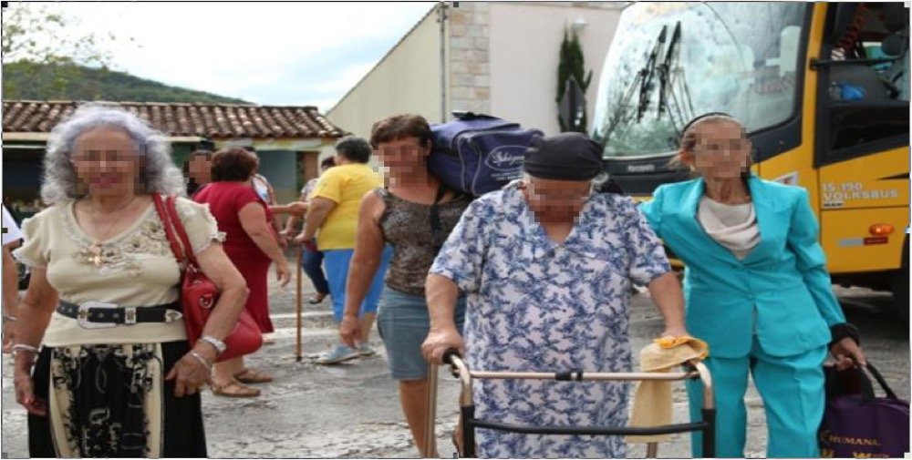
Imagem 1: Chegada das Fiandeiras e Tecedeiras
Foto: Ruyter Fernandes
Os saberes e ofícios advêm da ancestralidade, são modalidades artesanais, formas de expressão que representam um povo. A tecelagem manual faz parte dos saberes e ofícios, presente no amálgama cultural de vários povos, mas, infelizmente, em alguns lugares ela não é vista como parte das referências culturais. Desse modo, indagou-nos nesse curso um aprofundamento teórico sobre o ofício das fiandeiras, em especial o reconhecimento delas e de seus saberes como patrimônio cultural material e imaterial. Indaga ainda mais pelo fato de que a tradição das fiandeiras tem sido retomada, porém há uma nítida invisibilidade sobre sua existência e importância.
15
Os desdobramentos realizados pelo grupo responsável por esse trabalho se definiram na intervenção, realizada no dia 18 de abril de 2015, na Universidade Estadual de Goiás, Campus Cidade de Goiás, no Seminário Diálogos para Iniciativa em Cultura e Arte e em uma exposição fotográfica itinerante em Recife, realizada de 20 de junho a 20 de julho de 2015, no Museu da Abolição. As divulgações das exposições foram feitas mediante os convites abaixo por meio das redes sociais, como o facebook, por exemplo.
Imagem 2: Convite da Intervenção realizada no Seminário Diálogos para Iniciativa em Cultura e Arte Imagem 3: Convite da Exposição Fotográfica Itinerante em Recife
Nessa direção, entendemos "patrimônio como os monumentos e obras de arte, e também as festas, músicas e danças, os folguedos e as comidas, os saberes, fazeres e falares. Tudo, enfim, que produzimos com as mãos, as ideias e a fantasia" (LONDRES, 2004, p. 21).
Cultura é bem mais que costume de um povo, cultura é tudo aquilo que o homem traz consigo, mas que, ao mesmo tempo, transmite aos outros homens. Para Machado, A. (2003) apud Bueno (2005, p. 21) "o fuso e a roca eram, na verdade, as ferramentas de toda mulher, e são muito apropriados para que se evite a ociosidade, pois com elas é sempre possível produzir algo". Afirmação esta percebida na intervenção, pois as fiandeiras, por meio de seus apetrechos, se sentiam úteis e cheias de vida, sempre buscando novas formas de aprender e demonstrar os resultados de seus trabalhos.
As principais metodologias utilizadas nessa intervenção e na elaboração do relatório técnico-científico se definiram na Pesquisa Bibliográfica, desenvolvida a partir de material já elaborado, constituído principalmente de livros e artigos científicos e na Pesquisa-Ação, que objetiva tornar possível a análise das situações observadas e relacioná-las ao referencial teórico utilizado.
O projeto foi iniciado com reuniões entre o grupo para acertar detalhes, como identificação dos locais onde aconteceriam as intervenções, mapeamento das fiandeiras, artesãs convidadas, pessoas envolvidas na intervenção, custos, atribuição de responsabilidades entre os membros do grupo, etc. Acertados os detalhes iniciais do projeto de intervenção, foram realizadas as visitas aos locais de trabalho/moradia de algumas fiandeiras com o intuito de convidá-las para mostrar seu ofício, onde puderam contar sobre suas histórias de vida, técnicas utilizadas, materiais empregados, facilidades e dificuldades.
Imagem 4: Momento de acolhida e troca de vivências
Foto: Ruyter Fernandes
A intervenção tinha por intuito ser realizada em espaços preferencialmente frequentados por crianças, adolescentes e jovens, já que muitos deles não conhecem o trabalho das fiandeiras.
Imagem 5: Meninas aprendendo a bater e limpar o algodão
Foto: Ruyter Fernandes
A exposição museológica realizada no Museu da Abolição, em Recife, foi uma extensão da divulgação do trabalho das fiandeiras de Goiás. As fotografias resultantes da primeira intervenção mostraram a empatia entre as fiandeiras e o público presente, bem como a satisfação de estarem se reunindo e de ter seus trabalhos valorizados.
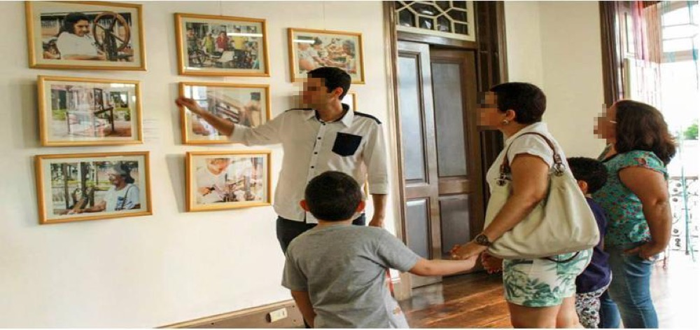
Imagem 6: Apresentação da exposição ao público
Foto: Rosélia Adriana Barbosa da Rocha
Direcionada para todo o público do museu, a exposição fotográfica contou com a participação de visitantes agendados e espontâneos. Atenção especial foi direcionada ao público escolar por se tratar de crianças e adolescentes em formação, nem sempre com a noção do que vem a ser patrimônio cultural, sua utilidade e a diversidade de bens abarcados neste conceito. Tal ênfase justifica-se, pois este público, em breve, será responsável pela manutenção e transmissão de nossas referências culturais.
16
Por conseguinte, as intervenções serviram para deixar em evidência a importância de preservar, valorizar e situar o trabalho realizado pelas fiandeiras, a valorização delas e de seu ofício, exemplo de cidadania, luta, partilha e cultura criada e recriada cotidianamente. Buscava-se também perceber como as fiandeiras têm sido valorizadas como pessoas portadoras de saberes, além de traçar um paralelo entre o trabalho realizado/apresentado e a visibilidade/existência da pessoa da terceira idade neste campo de estudo.
No mais, por meio do curso de EIPDCC, objetivava-se garantir que o acesso a cultura e a compreensão sobre patrimônio cultural se efetivasse por meio de ações que incluam a comunidade local, diante do fato de que a cultura não deve ser compreendida como fato isolado, mas no respeito ao outro e ao seu modo de vida.
DESENVOLVIMENTO
Ao iniciarmos o estudo, percebemos que as fiandeiras existem, produzem, atuam, mas não são denominadas em nenhuma localidade, como se não existissem, vivendo à margem da valorização patrimonial e cultural, coexistindo em alguma associação de fiandeira ou restrita às apresentações em eventos culturais. Desse modo, percebemos a necessidade de adentrarmos no cotidiano vivido por elas, captando a dimensão social e cultural na qual as fiandeiras existem para, assim, por meio de uma pesquisa mais aprofundada, desvelar o exercício realizado por elas, em particular as do APLTeares do Xixá.
A escolha do trabalho se pautou nas fiandeiras Teares do Xixá pelo fato de parte do grupo ser do mesmo município onde localiza o APL e também por uma das integrantes, Abadia Maria de Oliveira, ser gestora do Arranjo Produtivo Local (APL). Assim, por meio dos vínculos já consolidados, indagava-nos o fato do ofício não ser valorizado culturalmente por parte da sociedade como também não ser compreendido como patrimônio material e imaterial. Ao aprofundarmos na pesquisa, os objetivos foram fundamentais para nos direcionarmos no decorrer desse processo.
A visibilidade do trabalho realizado pelas fiandeiras, em particular por serem elas detentoras do conhecimento e responsáveis pela preservação das técnicas tradicionais, foi respondida e apresentada de modo satisfatório pelos pesquisadores. Ademais, o grupo conseguiu despertar o interesse da sociedade para o trabalho secular das tecedeiras, possibilitando maior reconhecimento social e valorização do seu ofício; um dos exemplos mais intensos foi à intervenção fotográfica realizado no Estado de Pernambuco.
Consequentemente, as informações repassadas para o público presente na intervenção e na própria exposição, sobre as técnicas da fiação, foram importantes para promover uma reflexão com as fiandeiras e o público a respeito da preservação e do reconhecimento enquanto patrimônio cultural. Naturalmente, o grupo constatou que a realização dos encontros de fiandeiras e a própria atividade em si, lhes restaura a vontade de produzir, resgatando sua cidadania e as tornando confiantes na importância dos seus saberes, além disso, o estímulo à capacidade do idoso em aprender reverte o declínio intelectual e estimula a saúde mental. Nesse caminhar, a cultura é um direito humano e o acesso às questões culturais deve ser garantido à sociedade de forma justa e igualitária.
17
O Estatuto do Idoso (2003/ Art. 21 §2º) preconiza que a pessoa idosa tem direito à cultura, ao esporte, lazer e diversões, que respeitem a sua peculiar condição de idade, e a participação em comemorações de caráter cívico ou cultural para transmissão de conhecimentos e vivências as demais gerações, no sentindo da preservação da memória e da identidade cultural. Nesse contexto, é indiscutível a relevância das atividades educativas, socioculturais, de lazer e de integração dirigidas à pessoa idosa. Pitanga (2006) ressalta que o processo de envelhecimento precisa ser compreendido como um período de vida que alimenta projetos para o futuro com novas descobertas e horizontes de criatividade.
Diante disso, meu interesse em estudar o assunto, enquanto profissional de Serviço Social, justifica-se pela necessidade de garantir que o acesso a cultura alcance toda a população, visto que a cultura é um direito humano e que o acesso às questões culturais deve ser garantido à sociedade de forma justa e igualitária.
O Serviço Social é uma profissão que lida com várias políticas públicas, as ações profissionais do Assistente Social incidem no campo do conhecimento, dos valores, dos comportamentos, da cultura, produzindo efeitos reais na vida das pessoas, sendo uma profissão que se insere na reprodução da vida social e, sem dúvida, engloba cultura aos modos de vida. Diante disso, concordamos com Moljo; Cunha (2009, p. 80):
Falar em cultura enquanto categoria analítica requer alguns cuidados: o homem quem produz cultura. Na nossa concepção, o homem é um sujeito histórico, um ser humano-genérico, que produz e se reproduz em condições determinadas, históricas, inserido numa determinada classe social. É este homem concreto o que produz a cultura, que possui uma visão de mundo, que se transforma e transforma a realidade na qual age. Do mesmo modo, entendemos que a cultura não é estática, esta se transforma no próprio agir do homem, se transforma no processo histórico.
O profissional passa a tomar consciência da importância de conhecer os costumes, os modos de vida, ou seja, a cultura dos povos ou comunidades pelo fato da cultura ser objeto para o conhecimento dos sujeitos com os quais se trabalha, como também para compreensão da realidade concreta.
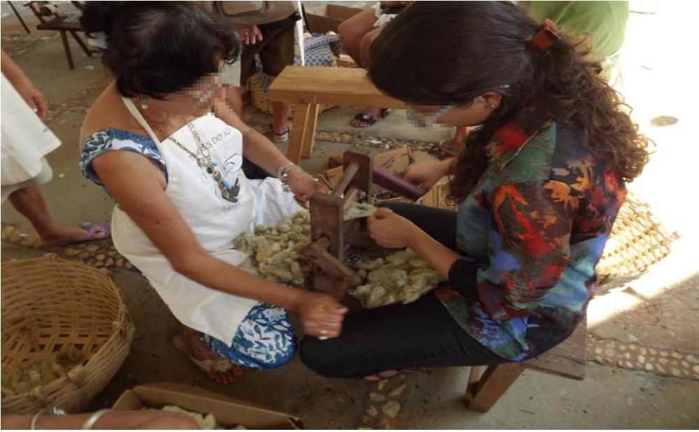
Imagem 7: Vivendo a experiência da troca cultural <
Foto: Ruyter Fernandes
O Código de Ética do Assistente Social (1993) traz alguns princípios fundamentais (liberdade, autonomia, emancipação dos indivíduos, eliminação de todas as formas de preconceito e respeito à diversidade etc.) que de fato contribuem para que o acesso aos direitos humanos abarque toda comunidade.
CONCLUSÕES
Ao analisar o perfil das fiandeiras do APL Teares do Xixá, foi averiguado que muitas se enquadram na fase da terceira idade, em união estável ou viúvas, residentes na zona rural ou urbana, aposentadas, de diversidade religiosa predominantemente católica e evangélica. Ao estabelecer maior vínculo com algumas delas, foi percebido submissão para com seus companheiros, sendo que, somente com a "autorização" deles, elas aceitaram participar da intervenção. Outras, na própria intervenção, telefonaram para os maridos ou "filhos" para comunicar que estavam bem, consequentemente informando a hora em que iriam retornar à residência.
18
No entanto, foi analisado que as atividades desenvolvidas por elas são um caminho que as conduz à produtividade e à independência financeira. Houve maridos que reclamaram das esposas estarem ocupando parte de seu tempo na realização dos ofícios de fiação/tecelagem, pois a atenção já não mais se voltava apenas para eles.
A elevação da autoestima, o reconhecimento da feminilidade e empoderamento foram fatores analisadas durante o período da intervenção; teve relatos de fiandeiras que agendaram horário no salão de beleza dias antes da intervenção. Ainda, por quase não saírem de suas residências, afirmaram que gostariam de conhecer a cidade histórica, desfrutando de diferentes formas de lazer.
Em linhas gerais, pode-se dizer que a intervenção ampliou o conceito de cultura, o papel das fiandeiras, a importância do ofício desenvolvido por elas, numa perspectiva de apresentar aos visitantes um novo olhar sobre as atividades, além de ressaltar a beleza dos materiais produzidos por elas. Através da intervenção realizada, o acesso à cultura e a compreensão sobre patrimônio cultural foram apresentados ao público e a visibilidade do trabalho realizado pelas fiandeiras foi respondida e revelada de modo satisfatório nas duas intervenções.
Ademais, o grupo conseguiu despertar o interesse da sociedade para o trabalho secular das tecedeiras, possibilitando maior reconhecimento social e valorização do seu ofício. Consequentemente, as informações repassadas para o público presente na intervenção e na própria exposição, sobre as técnicas da fiação, foram importantes para promover uma reflexão com as fiandeiras e o público a respeito da preservação e do reconhecimento enquanto patrimônio cultural.
Com relação aos espaços onde foram realizadas as intervenções, percebe-se que são locais de fácil acesso e que concentram um grande número de pessoas, o que possibilitou melhor divulgação dos trabalhos apresentados, como ainda conduziu as fiandeiras a novas experiências e a um maior contato com o público: crianças, adolescentes e universitários.
Nessa direção, os espaços públicos, como escolas, praças, teatros, museus, feiras, clubes, etc, devem ser adotados para apresentar o saber fazer das tecelãs, visto que a família, o poder público e a sociedade em geral devem garantir à pessoa idosa o acesso à cultura, inserção social, cidadania, liberdade, convivência familiar e comunitária. Ressalta-se que as ações desenvolvidas foram fundamentais para ampliar o conceito de cultura, patrimônios, acessibilidade, como também de inserção da pessoa idosa na perspectiva do trabalho, do contexto cultural, da produtividade e da vida comunitária.
A continuidade destas ações contribuirá para que sejam construídas novas possibilidades, por isso, o estudo apresentado tem por finalidade servir de base para outros pesquisadores, além de ser uma homenagem ao trabalho realizado pelas fiandeiras do APL Teares do Xixá, que muito fazem e ainda farão em nossa sociedade.
REFERÊNCIAS
BRASIL. Código de ética do/a assistente social. Lei 8.662/93 de regulamentação da profissão. - 10ª. ed. rev. e atual. Brasília: Conselho Federal de Serviço Social, [2012].
BRASIL. Lei nº 10.741 de 1ª de outubro de 2003. Dispõe sobre o Estatuto do Idoso e da outras providencias. Brasília, DF, [s.n] 2003.
BUENO, Luçany Silva. As técnicas tradicionais das fiandeiras e tecedeiras de Hidrolândia – Goiás. 2005. 114 p. Dissertação (Mestrado em Antropologia - Profissionalizante em Gestão do Patrimônio Cultural)–Universidade Católica de Goiás/IGPA. Goiânia. Disponível em: <http://tede.biblioteca.ucg.br /tde_busca/arquivo.php?codArquivo=102>. Acesso em: 02 de abril de 2015.
19
MARTINS, Marcolina. Tecelagem artesanal: um estudo etnográfico em Hidrolandia. Goiânia: CEGRAF/UFG, 1981.
KUPER, Adam. Cultura: a visão dos antropólogos.Tradução de Mirtes Frange de Oliveira Pinheiros. Bauru, SP: EDUCS, 2002.
LARAIA, Roque de Barros. Cultura: um conceito antropológico. 15. ed. Rio de Janeiro: Jorge Zahar, 2002.
LONDRES, Cecília. Patrimônio e performance: uma relação interessante. In: TEIXEIRA, João Gabriel L.C; GARCIA, Marcus Vinicius Carvalho; GUSMÃO, Rita (Orgs.). Patrimônio Imaterial, Performance Cultural e (Re)Tradicionalização. 1 ed. Brasília, 2004, v. 1, p. 19-30.
MIRANDOLA, Norma Simão Adad. As tecedeiras de Goiás: estudo lingüístico, etnográfico e folclórico. Goiânia: CEGRA/UFG, 1993.
MOLJO, Carina; CUNHA, Ariane Monteiro. Serviço Social e Cultura: considerações acerca das concepções de cultura na trajetória da profissão no Brasil desde a sua gênese até os anos de 1990. Libertas: revista da Faculdade de Serviço Social, Juiz de Fora: Programa de Pós-Graduação em Serviço Social/UFJF, v. 9, n. 2, p. 78-104, jul/dez. 2009.
Orientadora Acadêmica: Lucinete Aparecida de Morais
Coordenadora de orientação: Vânia Dolores Estevam de Oliveira
Anexos
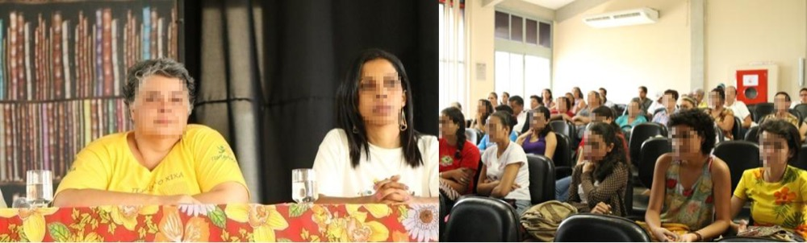
Imagens 1 e 2: Público presente na palestra sobre as fiandeiras do Teares do Xixá (Foto: Ruyter Fernandes).
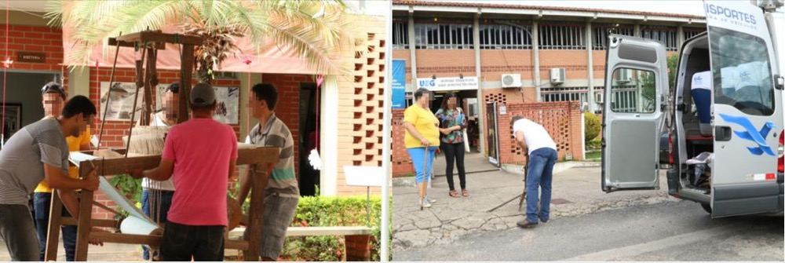
Imagens 3 e 4: As proponentes da intervenção Abadia Maria de Oliveira e Luana Brás Ribeiro fazem a recepção das fiandeiras e tecedeiras (Foto: Ruyter Fernandes).
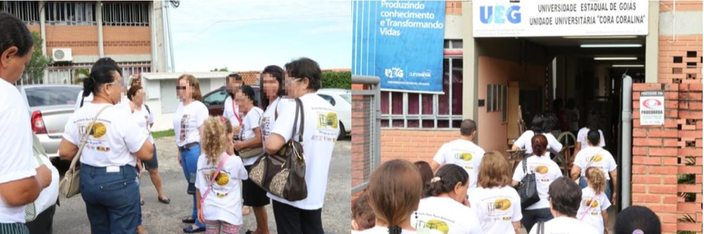
Imagens 5 e 6: Chegada das fiandeiras e tecedeiras (Foto: Ruyter Fernandes).
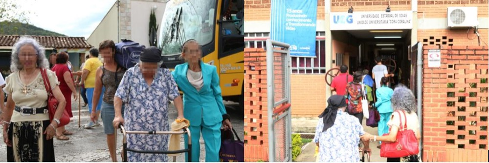
Imagens 7 e 8: Recepção de mais um grupo de fiandeiras e tecedeiras (Foto: Ruyter Fernandes).
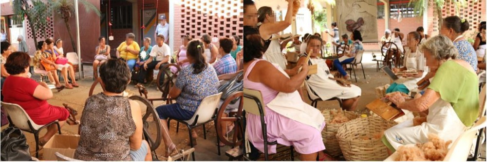
Imagens 9 e 10: Momento de acolhimento e conversa sobre o projeto de intervenção, e início dos trabalhos. (Foto: Ruyter Fernandes).
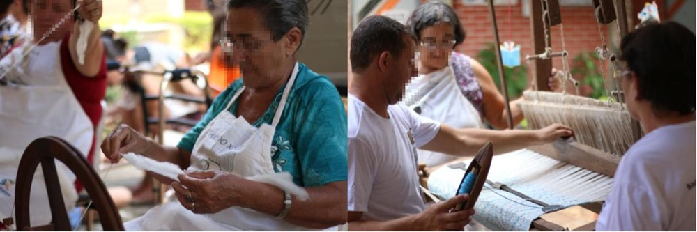
Imagens 11 e 12: Troca de conhecimento entre artesões (Foto: Ruyter Fernandes).
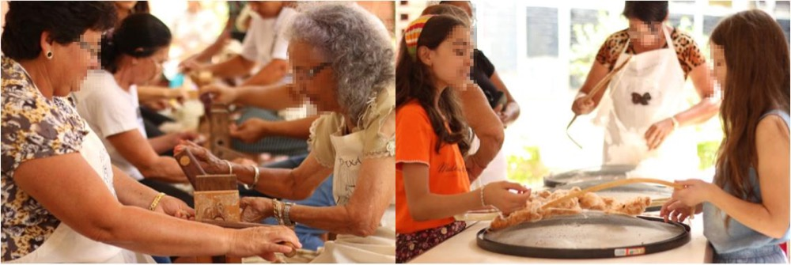
Imagens 13 e 14: Trabalho coletivo em torno da descaroçadeira de algodão e limpeza do mesmo (Foto: Ruyter Fernandes).
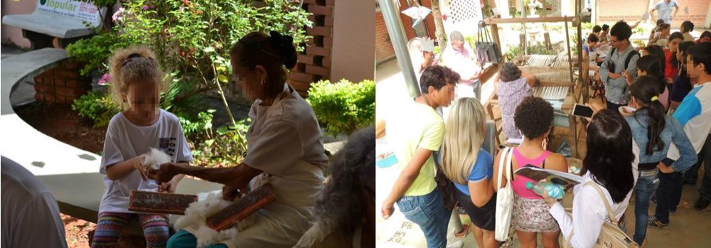
Imagens 15 e 16: O público aprecia e se encanta com o trabalho da fiandeira (Foto: Lindomar da Rocha).
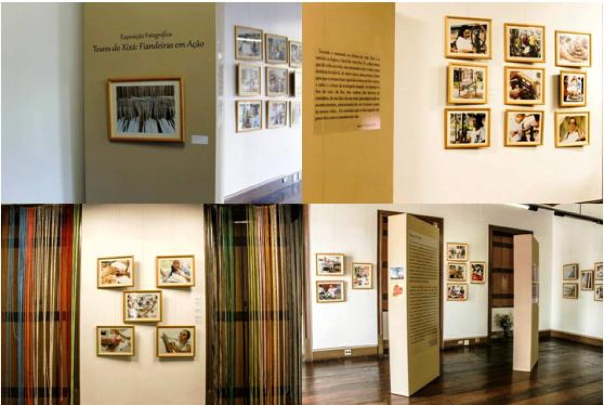
Imagens 17 à 20: Fotos e portadas decoradas da exposição com cordões de algodão tingidos (Foto: Rosélia Adriana Barbosa da Rocha).
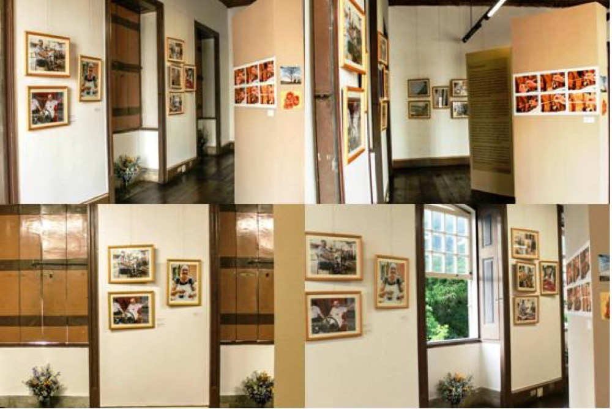
Imagens 21 à 24: Fotografias e ambiente expositivo (Foto: Rosélia Adriana Barbosa da Rocha).
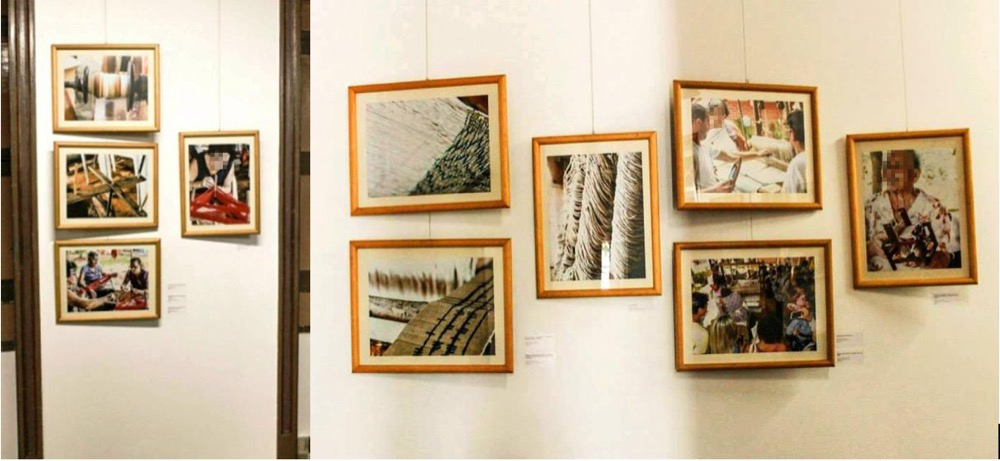
Imagens 25 e 26: Fotografias sobre a técnica da fiação e tecedura (Foto: Rosélia Adriana Barbosa da Rocha).
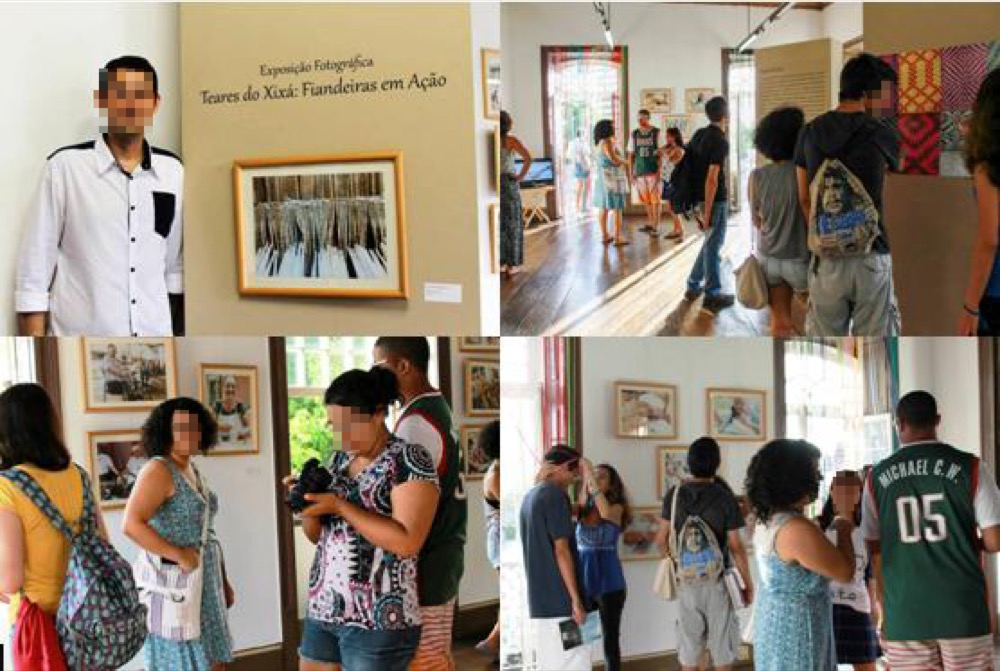
Imagens 27 à 30: Público na tarde de vernissage (Foto: Rosélia Adriana Barbosa da Rocha).
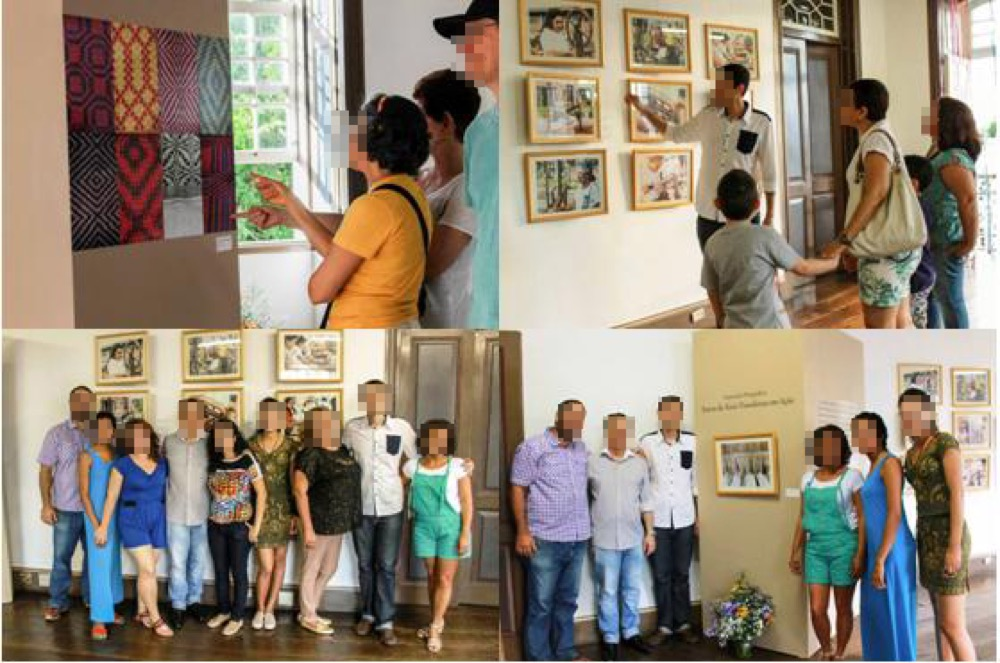
Imagens 31 à 34: Equipe de colaboradores e organizadores da exposição (Foto: Rosélia Adriana Barbosa da Rocha).
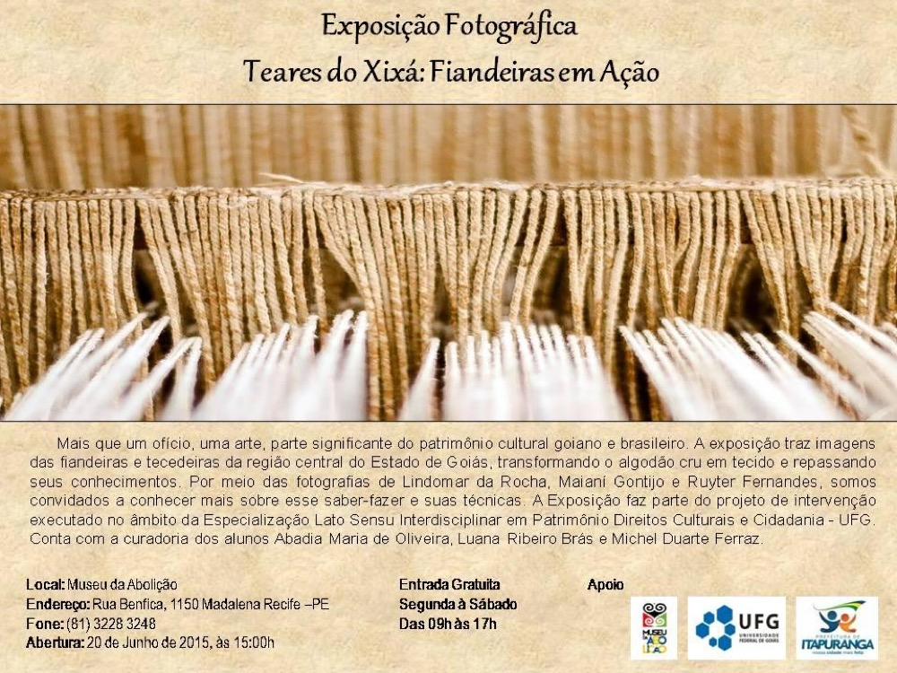
Imagem 35: Material gráfico da exposição no Recife–PE (dia 20 de junho de 2015).
Fiandeira
Sou fiandeira
Tecendo noite e dia
Uma esteira de pensamentos.
Sou fiandeira,
Aranha tirando de dentro
A liga que emaranha
Sou fiandeira
Bordando com palha e ouro
A bandeira de minha fé.
Sou fiandeira,
Vivo à beira
De tudo aquilo que é frágil,
Que parece fiapo
Ou que está por um fio.
Raquel Naveira
INTRODUÇÃO
Ponderando o conteúdo teórico obtido nas aulas e as experiências vivenciadas no curso de Especialização Interdisciplinar em Patrimônio, Direitos Culturais e Cidadania (EIPDCC), levando em consideração também a afinidade que surgiu entre os alunos, foi decidido construir e implementar um projeto de intervenção em grupo, tendo como tema central as fiandeiras e tecedeiras de Goiás e o complexo cultural em que estão inseridas. Notou-se que o saber-fazer da tecelagem manual precisava ser reconhecido, valorizado e divulgado como parte integrante das referências culturais goianas. Com esse intuito, o projeto foi coletivamente pensado e posto em prática pelos alunos Abadia Maria de Oliveira, Luana Ribeiro Brás e Michel Duarte Ferraz, sob a supervisão da orientadora acadêmica Lucinete Aparecida de Morais.
20
A intervenção foi denominada Teares do Xixá: Fiandeiras em Ação e teve dois desdobramentos envolvendo as fiandeiras e tecedeiras de quatro municípios componentes da Microrregião do Centro Goiano: Goiás, Heitoraí, Itaberaí e Itapuranga. Nossa escolha centrou-se nas artesãs do grupo Teares do Xixá.
O referido grupo está organizado desde 2013 como Arranjo Produtivo Local (APL) da Tecelagem Manual Teares do Xixá e tende a incluir outros municípios em sua composição. As atividades do APL ainda estão na fase inicial e conta com o mapeamento das fiandeiras e tecedeiras em atividade, a viabilização de apresentações em eventos públicos locais e regionais, bem como ações no intuito de estimular, dar maior visibilidade e valorização ao trabalho das artesãs. O grupo também objetiva a preservação das técnicas tradicionais e o repasse de outras mais modernas, atualizando as composições e possibilitando sua recriação.
Esperava-se que este projeto de intervenção pudesse contribuir, ainda que modicamente, para o reconhecimento e a difusão, em nível local e interestadual, das fiandeiras e tecedeiras e de sua manufatura. Na sua maioria são mulheres, muitas delas restritas apenas às áreas rurais e têm sua produção sobrepujada pelos tecidos industriais, subvalorizada pelos compradores, prejudicada pela urgência cotidiana dos trabalhos domésticos e da lida no campo, comprometida pelo machismo de seus esposos e companheiros, que querem vê-las por perto, sob seus domínios. Em resumo, muitas delas são mulheres subalternizadas e sujeitadas ao anonimato, que têm seu saber-fazer relegado ao esquecimento. Mesmo nas discussões e produções acadêmicas em torno do patrimônio e dos direitos culturais o ofício e a produção das fiandeiras e tecedeiras muitas vezes ficam de fora. Uma pena, pois para muitas delas fiar e tecer significa reviver o passado, modo de reverenciar seus ancestrais, o remédio que ameniza as tristezas da vida, uma forma de ativismo cultural e de integração social e mesmo uma fonte de renda a complementar o orçamento familiar. No entanto, por um motivo ou outro, nem sempre conseguem exercer seus ofícios como gostariam, recebendo a compensação merecida.
Nessa acepção, entendemos direitos culturais como parte integrante dos direitos humanos, inerentes a qualquer pessoa. No Brasil, essa categoria fundamental engloba “(a) liberdade de expressão da atividade intelectual, artística e científica; (b) direito de criação cultural, compreendidas as criações artísticas, científicas e tecnológicas; (c) direito de acesso às fontes da cultura nacional; (d) direito de difusão das manifestações culturais; (e) direito de proteção à manifestação das culturas populares, indígenas e afro-brasileiras e de outros grupos participantes do processo civilizatório nacional; (f) direito-dever estatal de formação do patrimônio cultural brasileiro e de proteção dos bens de cultura – que assim ficam sujeitos a um regime jurídico especial, como forma de propriedade de interesse público (SILVA, apud COSTA, 2011, p. 19).
Esse mergulho pela cultura popular goiana nos mostrou que apesar de estar arraigada na vida de várias famílias, sobretudo das áreas rurais, a tecelagem tradicional para ser mantida precisa ser revivida, reapresentada e apresentada aos que ainda não a conhecem. Dessa maneira, ações como as propostas nesta intervenção justificam-se por ajudar a trazer à tona tais referências culturais, revelando e reafirmando sua importância social, cultural e econômica, gerando, enfim, sentimentos de pertencimento, possibilitando a apropriação por parte do povo goiano e da sociedade brasileira.
21
DESENVOLVIMENTO
Os saberes e ofícios advêm da ancestralidade, são formas de expressão que representam um povo e repercutem no presente. A tecelagem manual faz parte desses saberes e ofícios presentes no amálgama cultural de vários povos, mas, infelizmente, em alguns lugares ela não é vista como parte integrante das referencias culturais que os formam; em outras palavras, não é compreendida como patrimônio cultural imaterial .
Nos orientamos pela conceituação de patrimônio imaterial presente na Convenção para Salvaguarda do Patrimônio Imaterial, da UNESCO. Vejamos o conceito nela inserto: “Entende-se por ‘Patrimônio cultural imaterial as práticas, representações, expressões, conhecimentos e técnicas – junto com os instrumentos, objetos, artefatos e lugares culturais que lhes são associados – que as comunidades, os grupos e, em alguns casos, os indivíduos reconhecem como parte integrante de seu patrimônio cultural. Este patrimônio cultural imaterial, que se transmite de geração em geração, é constantemente recriado pelas comunidades e grupos em função de seu ambiente, de sua interação com a natureza e de sua história, gerando um sentimento de identidade e continuidade e contribuindo assim para promover o respeito à diversidade cultural e à criatividade humana. (...) COSTA, 2011, p. 43).
No caso do Brasil, a questão têxtil também perpassou nossa história e esteve presente em passagens marcantes, inclusive do período colonial, época em que a tecelagem manual teve que ser supostamente interrompida por força de uma norma de cunho político/econômico. Trata-se do afamado Tratado de Panos e Vinhos ou Tratado de Methuen, firmado em 1703 entre Inglaterra e Portugal, estabelecendo a obrigatoriedade da importação de vinhos portugueses pela Inglaterra e importação de panos ingleses por Portugal. Décadas mais tarde de sua assinatura, mais precisamente no ano de 1785, Dona Maria I, rainha de Portugal, ratifica-o promulgando novo alvará ordenando a apreensão e destruição de teares no Brasil, em clara reafirmação ao privilégio concedido ao tecido inglês.
O referido alvará proibia a existência de teares para a produção de tecidos finos de qualquer variedade comercial, contudo, permitia a fabricação de panos considerados grosseiros, comumente usados para vestimenta dos negros escravizados e para o empacotamento de produtos . Nessa época, já se tinha em terras brasileiras um razoável nível de produção realizada com teares manuais de pequeno, médio e grande porte, preparada para o consumo interno. Entretanto, as referidas normativas foram postas em prática e serviram para justificar confiscos de teares e fechamentos de oficinas têxteis (BUENO, 2008, p. 34-35).
Segue alguns trechos do referido alvará: Eu, a rainha (...) hei por bem ordenar que todas as fábricas, manufaturas ou teares de galões, de tecidos ou de bordados de ouro e prata; de veludos, brilhantes, cetins, tafetás ou de qualquer outra qualidade de seda (...) ou de qualquer outra qualidade de linho (...) ou de outra qualquer qualidade de tecidos de lã (...) sejam extintas e abolidas em qualquer parte onde se acharem nos meus domínios do Brasil. (BUENO, 2008, p. 34).
BUENO (2008, p. 35) conta que há notícias de pelo menos 20 teares apreendidos em toda colônia, além do fechamento de fabriquetas.
Observando tal situação, não podemos deixar de considerar que as notícias circulavam e que o episódio pode ter trazido receio entre os produtores, o que também pode ter ocasionado certo esfriamento na produção nacional, pelo menos nas áreas urbanas. Outra questão a ser considerada é que a distância da Capital do Vice-Reino (Rio de Janeiro) pode ter permitido a continuidade da tecelagem em províncias mais afastadas, como é o caso da de Goiás.
22
Assim, mesmo com certo receio, os teares permaneceram em uso nas pequenas cidades e vilarejos distantes, principalmente nas propriedades rurais, que muito dependia dos tecidos ali produzidos para o uso doméstico, sendo também comum a barganha do excedente com viajantes mascates e demais interessados em sua aquisição. Ademais, tem-se por certo que na província Goiás a referida proibição não foi suficiente para impedir totalmente a produção dos tecidos e a transmissão dos repassos (modelo de pontos), muitas vezes legados de geração em geração como joias de família, perpetuando a tradição.
Passados tantos anos, com a oferta dos tecidos industrializados, é notório certo desinteresse pelos tecidos manufaturados. A forma de produção também vem sofrendo alterações e as festas de mutirões e traições , muito comuns em vários municípios goianos, não são mais tão constantes. Contudo, a fiação e a tecelagem tradicional goiana permanecem e vêm passando por um processo de redescoberta e reinvenção. Recentemente, foram realizados dois encontros de fiandeiras em Itapuranga, nos quais se pode observar o quanto este tipo de atividade restaura nessas mulheres a vontade de produzir, mais que isso, as tornam confiantes na importância do seu trabalho e resgatam sua cidadania, já que permitem a continuidade das interações sociais e das vivências culturais , além de despertar o interesse do público.
O mutirão normalmente é organizado pela anfitriã que necessita de auxílio no cumprimento de alguma tarefa de tecelagem. Nele, a dona da casa se responsabiliza pela alimentação que será servida às ajudantes presentes no dia de trabalho. Já na traição ou treição a organização é feita pelas ajudantes, que chegam à casa da fiandeira e/ou tecedeira de surpresa para o cumprimento do dia de trabalho. Na traição o próprio grupo que se dispõe a ajudar, cuida do preparo da alimentação e dos petrechos necessários ao cumprimento da tarefa. Num caso ou noutro as ajudantes comumente são parentas e amigas.
A feitura da tecelagem manual tradicional nas áreas rurais dos municípios goianos já foi responsável por diversos hábitos sociais, dentre eles, o de compadrio, já que os mutirões e traições propiciavam, de maneira mais intensa, os encontros e a socialização das pessoas das pequenas cidades e áreas rurais. Muitas vezes esses dias de trabalho terminavam em festas que duravam até o dia amanhecer, o que possibilitava a convivência social, inclusive entre pessoas de localidades distintas. Nesses encontros era comum se iniciarem amizades e namoros, que muitas vezes acabavam em casamentos. Essas questões sociais podem ser conferidas nas pesquisas acadêmicas de Garcia (1981) e de Mirandola (1993).
Em processo de retomada, cada vez mais a produção das fiandeiras e tecedeiras tem sido estimulada pela economia do turismo e pela procura por produtos ecologicamente e socialmente corretos . Também vem sendo reavida sob a ótica do patrimônio cultural. Nesse sentido, políticas públicas estão sendo implementadas, seja através de museus e demais instituições culturais, ou mesmo diretamente pelas secretarias de cultura. Entre as ações hodiernamente empreendidas, podemos observar a realização de encontros, demonstrações e feiras, o que tem contribuído significativamente com a promoção, a difusão e o reconhecimento desse saber-fazer. Por conseguinte, as artesãs que antes produziam individualmente estão passando, inclusive, a se interessar pela constituição de grupos formalmente organizados, como as associações e as cooperativas; iniciativa válida já que agrega força na luta em prol do seu ofício e da valorização de seus produtos.
Vale mencionar que boa parte desses tecidos é produzida sem uso de produtos químicos, respeitando as premissas da sustentabilidade e equilíbrio ambiental.
É o caso do Museu Histórico de Jataí, que promove encontros de fiandeiras e tecedeiras onde elas produzem e repassam suas técnicas.
23
Pesquisadores já registraram em livros, artigos, teses, dissertações e documentários a respeito da tecelagem manual tradicional, relatando desde os seus modos de trabalhos, objetos e utensílios, até a linguagem e as cantorias, tão peculiares no caso das fiandeiras do Estado de Goiás. Apesar disso, nem sempre os trabalhos acadêmicos rompem e/ou atravessam os muros das universidades e chegam ao grande público.
Então, o desejo de poder evidenciar o trabalho das fiandeiras e tecedeiras motivou nossa intervenção. Nosso projeto também foi alimentado pela descoberta da habilidade e da dedicação requerida e desprendida em cada etapa da produção do tecido, desde o plantar do algodão até a escolha do repasso que será urdido e tramado no tear. Academicamente, inspirou-nos a possibilidade de analisar e colocar em foco aspectos históricos, sociais e culturais, com perspectiva nos direitos culturais . Nesse sentido, nosso trabalho aponta-nos um caminho na tentativa de poder contribuir com a asseguração da cidadania e de pôr em prática os conhecimentos obtidos ao longo do curso de especialização.
Seguimos as premissas de Francisco Humberto Cunha Filho quando diz que Direitos Culturais são aqueles afetos às artes, à memória individual e coletiva e ao fluxo de saberes, que asseguram a seus titulares o conhecimento e uso do passado, interferência ativa no presente e possibilidade de previsão e decisão de opções referentes ao futuro, visando sempre à dignidade da pessoa humana (CUNHA FILHO, on-line).
2.1 OBJETIVO GERAL
Contribuir com a preservação e a difusão da tecelagem manual enquanto parte integrante do patrimônio cultural goiano e brasileiro, despertando a identificação e apropriação social.
2.1.2 Objetivos Específicos
Dar visibilidade às mestras fiandeiras e tecedeiras, detentoras do conhecimento e responsáveis pela preservação das técnicas tradicionais;
Despertar o interesse da sociedade para o trabalho secular das fiandeiras e tecedeiras, possibilitando maior reconhecimento social e valorização do seu ofício;
Repassar ao público presente nas intervenções noções das técnicas de fiação e tecelagem, estimulando sua preservação;
Ajudar o Museu da Abolição a dialogar e difundir o patrimônio cultural de outros lugares, valorizando memórias, valores históricos, artísticos e culturais importantes para a formação do povo brasileiro.
2.2 METODOLOGIA
Depois de processar as leituras obrigatórias e complementares, participar das webconferências sugeridas pelos professores e orientadores acadêmicos, bem como das discussões vivenciadas no ambiente virtual e nas aulas presenciais, decidiu-se dar início ao planejamento da intervenção. Procedeu-se com reuniões presenciais e virtuais entre os membros do grupo para acertar detalhes como a escolha dos locais onde ela aconteceria, a seleção das fiandeiras e tecedeiras convidadas, a identificação de possíveis pessoas e instituições colaboradoras, o planejamento orçamentário de custos, a logística de deslocamentos, a atribuição de responsabilidades entre os membros do grupo, as estratégias de divulgação, etc.
Acertadas essas questões elementares, uma representante do grupo fez visitas aos locais de trabalho e/ou moradia de algumas fiandeiras, com o intuito de convidá-las para participar da intervenção em que haveria exibição pública da tecelagem manual feita por elas. Depois do convite ter sido aceito, cuidou-se de pleitear, junto à prefeitura do município de Itapuranga, apoio no sentido de viabilizar o transporte das fiandeiras, seus petrechos de trabalho e matéria-prima, além de alimentação para o dia da intervenção, que se realizaria na Cidade de Goiás. As parcerias foram firmadas e o evento aconteceu dentro do previsto, no dia 18 de abril de 2015, com a participação de 56 fiandeiras.
24
Depois disso, os alunos se reuniram novamente e decidiram projetar aquela intervenção para outros lugares. Escolheu-se, então, montar uma exposição fotográfica com as imagens captadas no dia da intervenção em Goiás, além de outras imagens que o grupo achasse pertinentes. Logo se chegou ao consenso de que a exposição seria montada em Recife, já que um dos integrantes do grupo residia neste local e teria mais facilidade na organização e montagem da mostra. Dentre as instituições que poderiam receber a exposição fotográfica foi sugerido e acatado o Museu da Abolição .
A referida instituição é um museu público federal, ligado ao Instituto Brasileiro de Museus (IBRAM).
Em seguida, foi iniciado o proscesso de negociação com o museu, ficando esclarecidas as responsabilidades dos alunos proponentes da intervenção e da instituição receptora, a data de início e de término da exposição, dentre outras questões. Dessa forma, dentro do esperado, a exposição aconteceu no dia 20 de junho de 2015, no Museu da Abolição.
2.3 PROCEDIMENTOS
Como dito, a intervenção Teares do Xixá: Fiandeiras em Ação teve dois desdobramentos. O primeiro deles aconteceu na Cidade de Goiás, no dia 18 de abril de 2015, mais precisamente na sede da Universidade Estadual de Goiás, Unidade Cora Coralina.
Esta primeira intervenção consistiu na reunião e apresentação das fiandeiras e tecedeiras no âmbito do I Seminário Diálogos em Cultura e Arte – I Curso de Formação para Iniciativas em Cultura e Arte. Aproveitando a oportunidade do evento, uma das integrantes do grupo fez uma explanação no seminário falando sobre a proposta da intervenção, apresentando o APL Teares do Xixá e afirmando a importância cultural do reconhecimento do trabalho das artesãs da tecelagem manual. A palavra foi aberta para os demais integrantes da mesa e do público em geral constituindo um rico fórum de discussão em favor das artesãs, de seus ofícios e de suas manufaturas. Entre o público presente foi possível reunir 56 fiandeiras e tecedeiras, a maioria participante do grupo de Teares do Xixá, além de acadêmicos, professores, membros de órgãos e entidades públicas e interessados em geral.
Num momento posterior ao seminário houve a exibição pública das artesãs, que foi frequentada por crianças, jovens e adultos, muitos deles desconhecedores dos processos da fiação e tecelagem manual . Ali elas puderam interagir com o público, contar suas histórias de vida, explicar as técnicas utilizadas na produção, demonstrar o funcionamento dos petrechos de trabalho, falar sobre a matéria-prima empregada, conversar sobre as facilidades e dificuldades de seu ofício, dentre outras questões. O dia foi bastante produtivo e propiciou de forma direta a troca de conhecimento.
Na apresentação pública do grupo foram utilizadas rodas, cardas e teares manuais tradicionais (horizontal e de pente liso), tecidos urdidos com repassos coloridos e com desenhos identitários. Segue lista detalhada dos demais materiais utilizados na realização do evento: 1 carda para cada fiandeira, 1 roda para cada fiandeira, 2 teares de quatro pedais e liço, 1 urdideira, 1 dobradeira, 3 descaroçadores, 5 arcos de flotagem (bater algodão), 5 mesas pra bater algodão, 5 peneiras grossas, 5 fusos, cadeiras com encosto para cada fiandeira, 10 balaios grandes, 1 balaio de colo para cada fiandeira, aventais e toalhas de pescoço para cada fiandeira, 50 quilos de algodão com semente, 25 quilos de barbante colorido para urdir e fiar, 10 cestos de lixo grandes, 3 garrafas de café, 2 garrafas de chás, média de 2 litros de água mineral para cada fiandeira, deslocamento das fiandeiras das áreas rurais dos quatro municípios para a área urbana, deslocamento dos municípios para o local da intervenção (Cidade de Goiás), copos descartáveis, café da manhã, almoço e lanche para as fiandeiras e pessoas do grupo de apoio.
25
Dando continuidade à intervenção, os alunos proponentes resolveram ampliar a ação para fora do Estado de Goiás por meio de uma exposição fotográfica itinerante, socializando os resultados obtidos naquele dia. Dentre as possibilidades de locais para exposição fora de Goiás, foi escolhido, como dito, Pernambuco, por ser o Estado natal de um dos proponentes da intervenção e por ter, assim como Goiás, tradição na tecelagem manual. Dessa forma, o segundo desdobramento da intervenção aconteceu em Recife, no dia 20 de junho de 2015. Dentre as instituições que poderiam receber a exposição deu-se preferência por um museu público, tendo sido escolhido o Museu da Abolição. A escolha de uma exposição museológica justifica-se, pois:
O museu é tido como um centro cultural capaz, que tem como princípio o resgate da memória socioeconômica, política e cultural, identificando fatos, personagens e objetos, bem como estimulando a proteção da herança sociocultural da nossa sociedade. (SANTOS, 2000, p.51).
Ademais, a exposição museológica trata-se do modo clássico e intencional de comunicação entre o museu e seu público . A esse respeito, Santos (2000, p.129) nos diz que:
Santos (2000, p. 125-126) enumera e explica as intencionalidades da comunicação museológica propiciada pelas exposições.
Dentre as atividades técnicas de um museu, a exposição é aquela que mais aproxima a instituição de seu público. Graças às exposições e seus recursos complementares (catálogos, textos e multimeios) o visitante pode tomar conhecimento de todas as atividades levadas a efeito pelos diversos setores do museu. É dessa forma que a conservação, a restauração, a coleta e processamento técnico, a pesquisa, dentre outras atividades, podem ser divulgadas e apreciadas pelo público fechando, assim, um ciclo de atividades que tem como objetivo evidenciar o legado material [e imaterial] do Homem e de sua natureza.
Sabendo que as técnicas da tecelagem manual se desenvolveram também com a presença marcante dos negros escravizados, no período colonial e imperial, e se perpetuaram entre os afrodescendentes, acreditou-se na consonância do projeto de exposição com a missão do museu, qual seja:
Preservar, pesquisar, divulgar, valorizar e difundir a memória, os valores históricos, artísticos e culturais, o patrimônio material e imaterial dos afrodescendentes, por meio de estímulo a reflexão e ao pensamento crítico, sobretudo quanto ao tema abolição, contribuindo para o fortalecimento da identidade e cidadania do povo brasileiro. (IBRAM, 2012).
Com inspiração nessa missão, foi montada a Exposição Fotográfica Teares do Xixá: Fiandeiras em Ação . A mostra contou com 30 fotografias feitas pelos fotógrafos Abadia Maria de Oliveira, Lindomar da Rocha, Maianí Gontijo e Ruyter Fernandes. A maior parte dos registros fotográficos foi feita no dia da intervenção, realizada em abril, na Cidade de Goiás. A outra parte são imagens do primeiro encontro de fiandeiras do grupo Teares do Xixá, ocorrido em 2011, na área rural de Itapuranga.
Para a montagem da exposição fotográfica foram seguidas as orientações de Cury (2006), Costa (2006, p. 60-66), Crespo Filho (2005, p. 92-151) e Santos (2000, 129-133).
Em geral, as fotografias mostram a empatia entre as fiandeiras e tecedeiras e o público presente na intervenção, bem como a satisfação de estarem se reunindo e de ter seus trabalhos prestigiados. Além disso, as imagens mostram seus petrechos de trabalho em uso, bem como o repasse e a execução das técnicas. Optou-se por dispô-las em ordem cronológica, de acordo com os acontecimentos no dia da intervenção e das etapas da produção do tecido, o que facilitou a compreensão dos visitantes.
26
Além das fotografias, foram confeccionados, plotados e postos em painéis e paredes os textos de abertura, texto explicativo sobre o grupo Teares do Xixá, texto sobre a proposta da especialização, painel com amostras de tecidos, e ficha técnica (vide Anexo B). Somou-se às fotografias o vídeo produzido por Ruyter Fernandes no dia da intervenção na Cidade de Goiás. Nele foi registrado o passo a passo das técnicas empreendidas pelas artesãs, desde o descaroçamento e limpeza do algodão até a mistura de fios coloridos na confecção do tecido.
Foram utilizados os seguintes recursos expográficos: 1 TV LCD 32’ para exibir as fotografias excedentes não impressas e um vídeo mostrando o trabalho das fiandeiras, 4 paredes falsas/biombos usados para receber fotografias e/ou texto de abertura e 30 molduras de madeira com vidro e passe-partout para as fotografias impressas.
A exposição foi direcionada para todo o público do museu, nele incluído os visitantes agendados e espontâneos. Atenção especial foi dada ao público escolar por se tratar de crianças e adolescentes em formação, nem sempre com a noção do que vem a ser patrimônio cultural, sua utilidade e a diversidade de bens abarcados neste conceito, nele se incluindo a tecelagem manual. Tal ênfase justifica-se, pois este público, em breve, será responsável pela manutenção e transmissão de nossas referências culturais.
Com isso, pretendeu-se tornar a exposição um recurso a mais a serviço da promoção da tecelagem tradicional, contribuindo para a autovalorização das fiandeiras e das comunidades envolvidas com a prática deste saber cultural.
2.4 RESULTADOS
O resultado principal da intervenção e de seus dois desdobramentos (Goiás e Pernambuco) foi a divulgação do complexo cultural da tecelagem manual enquanto parte significativa do patrimônio cultural goiano e brasileiro. As duas ações possibilitaram mostrar ao público que o saber-fazer das fiandeiras e tecedeiras faz parte das nossas referências culturais, o que implica diretamente na questão de sua permanência. Com essa intervenção, foi possível também ajudar a elevar a autoestima dessas mulheres, guardiãs da tradição, da arte, do requinte, da destreza, da humildade, da persistência, dos modos de viver e da cultura que aprenderam e tomaram como sua. E o quanto temos a aprender com elas.
Sendo assim, não podemos mensurar em números exatos e dados objetivos os resultados obtidos com a intervenção Teares do Xixá: Fiandeiras em Ação. Contudo, os sorrisos das fiandeiras ao reencontrar as amigas e o antigo tear na intervenção de Goiás, o repasso das técnicas às crianças, a admiração dos visitantes na exposição fotográfica em Recife, tudo isso nos parece indício de que cumprimos de modo satisfatório os propósitos de nosso projeto de intervenção e da especialização. É válido informar ainda que a exposição, prevista para ser encerrada no dia 20 julho, foi prorrogada, a pedido da museóloga do Museu da Abolição. Entendemos isso como um sinal de sua qualidade e de pertinência de sua proposta.
2.5 CONCLUSÕES
Mais que um ofício ou uma arte, a tecelagem e seus modos tradicionais de execução reportam-se a momentos ancestrais, carregados de histórias e potencialmente fortes para repercutir no presente, ajudando a implementar a cidadania por meio das vivências e revivências das nossas referências e identidades culturais. Inegavelmente, a tecelagem tradicional faz parte do nosso patrimônio cultural, digno, portanto, de ser preservado, provido e vivenciado. Todavia, para continuar presente, o patrimônio intangível não pode existir apenas na mente de um indivíduo ou permanecer adstrito à sua esfera privada, mas deve ser manifestado por este indivíduo ao mundo externo ou a qualquer outro indivíduo (SCOVAZZI, 2011, p.125).
27
Concluindo, nos demos por satisfeitos com as ações empreendidas, mas, para completar o objetivo inicialmente proposto, fica aqui o nosso desejo de poder viabilizar outros desdobramentos, como a produção de artigos científicos, apresentações dos resultados em eventos acadêmicos, bem como a circulação da própria exposição fotográfica. Registramos também nosso afetuoso agradecimento às fiandeiras e tecedeiras que participaram da intervenção, às nossas orientadoras acadêmicas que ajudaram a conduzir e a concretizar nossa proposta, às pessoas que voluntariamente abraçaram o projeto e viabilizaram seu acontecimento. Ficou a lição de que a cultura é fator de desenvolvimento, de integração social, de implementação da cidadania, essência fundamental para a plenitude da dignidade humana.
BRAHIC, M. El telar. Barcelona, Espanha:Editora Parramón , 1992.
COSTA, Evanise Páscoa. Princípios básicos de museologia. Curitiba: Coordenação do Sistema Estadual de Museus/Secretaria de Estado da Cultura, 2006.
COSTA, Rodrigo Vieira. A dimensão constitucional do patrimônio cultural: o tombamento e o registro sob a ótica dos direitos culturais. Rio de Janeiro: Lumen Juris, 2011.
CRESPO FILHO, Jayme Moreira. Preservação e difusão do patrimônio cultural do exército brasileiro. Rio de Janeiro: Editora da Biblioteca do Exército, 2005.
KASSAB, A, L. Algodão: do artesanato indígena ao processo industrial. São Paulo: Ícone, 1986.
KUPER, Adam. Cultura: a visão dos antropólogos.Tradução de Mirtes Frange de Oliveira Pinheiros. Bauru, SP: EDUCS, 2002.
LARAIA, Roque de Barros. Cultura: um conceito antropológico. 15. ed. Rio de Janeiro: Jorge Zahar, 2002.
LONDRES, Cecília. Patrimônio e performance: uma relação interessante. In: TEIXEIRA, João Gabriel L.C; GARCIA, Marcus Vinicius Carvalho; GUSMÃO, Rita (Orgs.). Patrimônio Imaterial, Performance Cultural e (Re)Tradicionalização. 1 ed. Brasília, 2004, v. 1, p. 19-30.
MARQUES FILHO, Adair; SILVA, Gisele Costa Ferreira da; OLIVEIRA, Abadia Maria de. Nas tramas da história: o trabalho artesanal em Goiás e sua apropriação pela moda. In:SIMPÓSIO NACIONAL DO CIEAA e SIMPÓSIO NACIONAL DE HISTÓRIA E COLÓQUIO UEG NA ESCOLA. 2012.Anais... Goiânia, GoiásDisponível em: <http://www.anais.ueg.br/ index.php/simposiocieaa/article/view/9-21>. Acesso em: 02 jun. 2015.
MIRANDOLA, Norma Simão Adad. As tecedeiras de Goiás: estudo lingüístico, etnográfico e folclórico. Goiânia: CEGRA/UFG, 1993.
NOVAIS, F. Portugal e Brasil na crise do antigosistema colonial. 2. ed. São Paulo: Hucitec, 1981. p. 272-273.
OLIVEIRA, Maria Abadia de. O retrato da tecelagem manual tradicional em Itapuranga. Itapuranga: Prefeitura Municipal de Itapuranga, Secretaria de Cultura. 2012.
POHL, J, E. Viagem ao interior do Brasil. São Paulo: EDUSP, 1976.
SAINT-HILAIRE, A de. Viagem à Província de Goiás. Belo Horizonte: Itatiaia; São Paulo: EDUSP, 1975.
SANTOS, Fausto Henrique dos. Metodologia aplicada em museus. São Paulo: Editora Mackenzie, 2000.
SCOVAZZI, Tullio. A definição de patrimônio cultural intangível. In: CUREAL, Sandra; KISHI, Sandra Akemi Shimada; SOARES, Inês Virgínia Prado; LAGE, Claudia Marcia Freire (Coord.). Olhar multidisciplinar sobre a efetividade da proteção do patrimônio cultural. Belo Horizonte: Fórum, 2011.
SILVA, Valtuir Moreira da; OLIVEIRA, Abadia Maria de. Os saberes das tecedeiras e fiandeiras: narrativas e experiências em Itapuranga-GO– 1970. 2010. In: II SIMPÓSIO NACIONAL DE HISTÓRIA - I COLÓQUIO DA UEG NA ESCOLA. Disponível em: <file:///C:/Users/MICHELE/Downloads/1097-3425-1-PB.pdf>. Acesso em: 02 jun. 2015.